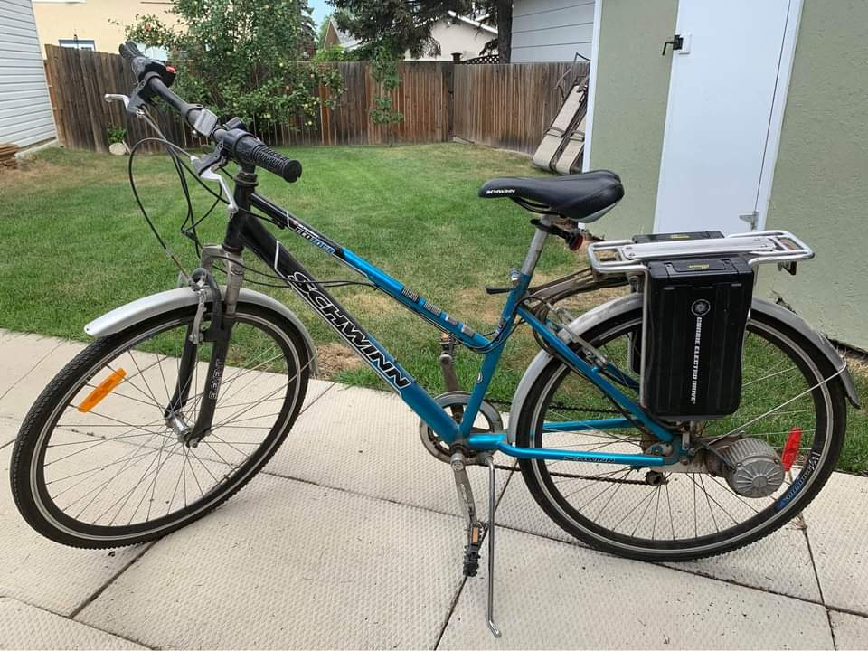
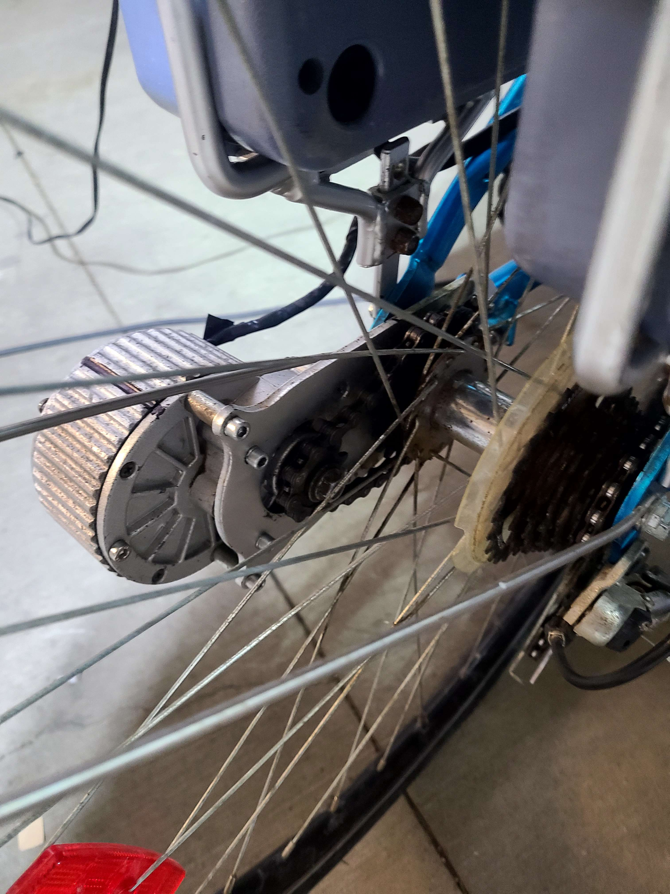
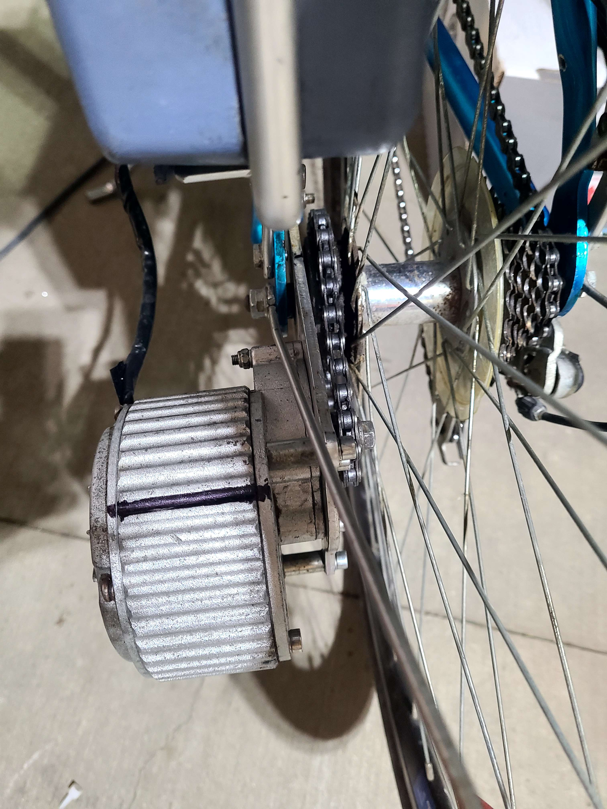
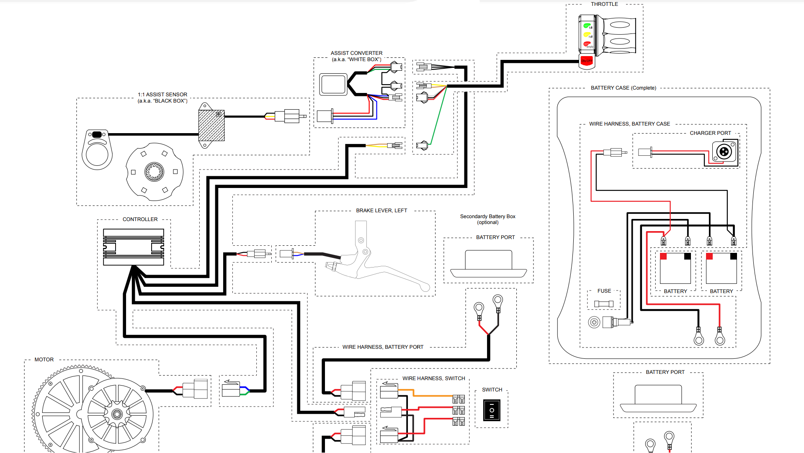

2008 Schwinn Ecotour E-Bike

INFO:
INFO:
TODO: add more images and detailed info
why did i buy this pos
I bought this bike off fb marketplace after my previous bike (~2017 lime green diadora mountain bike from my dad) got stolen, decided to try an ebike as my car needs a safety inspection, and i only have my learners, and i had litle cash.
it had the batteries rebuilt in aug 2022, had been sitting in storage for a while
Pictures
 
Stats
has a sticker on bottom with a date of 11/24/2008 - almost 15 years old
MOTOR: 24v w/ integrated gearbox, output 480rpm 9 tooth sprocket, to 20in. rear wheel w/ 20tooth sprocket, top speed of ~21kmh
Battery 2x 24v packs, 2 12v sla golfcart batteries in each
Controller: aftermarket from prev. owner, removes pedal assist(PAS), has unused connector for onboard battery charging
brakes: crappy vbrakes that can barely handle the weight of the batteries
Frame: standard roadbike/cruiser frame, springs in front fork, no rear suspension, has a thick kickstand
Pedal: 3 gears on pedals (todo: count teeth on sprockets and calc ratio)
Major Issues
Motor gearbox likely has a bad bearing - gets concerningly hot
Front brakes are very weak, cable craying & stretched + uneven pad wear
Minor Issues
PAS/TAG switch does nothing
Battery gauge sucks - 3leds for "full", "half", "empty". does not show use or voltage
front suspension sucks - no dampening, just springs in fork
No lights for night riding - headlamp doesnt fit my helmet well, clip-on blinking red led doesnt fit my backpack or vest/coat well
skinny road tires - install knobbier tires for winter (cant really change rims because of motor sprocket)
possible future mods
Upgrade motor & controller to 3phase AC
Upgrade motor & controller to 48v and rewire batterpack switching
install a speedometer
install a hub motor in rear
front disk brakes
add a 24v truck horn lol
add led marker lights